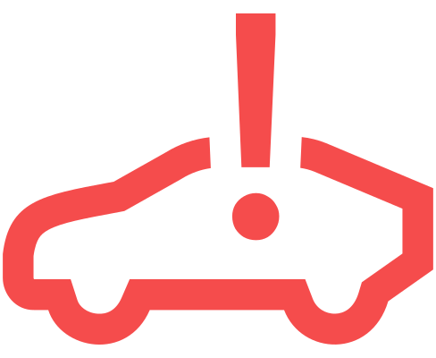
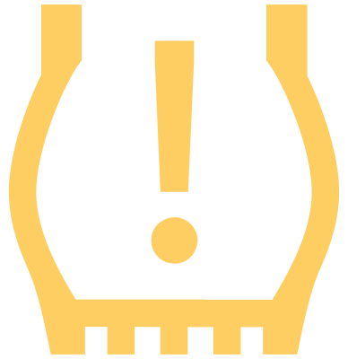
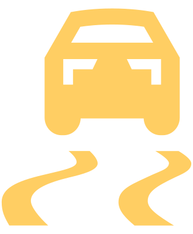
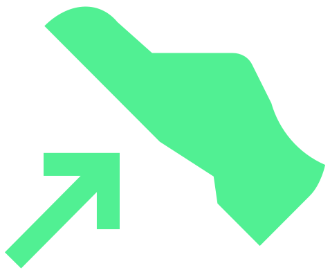
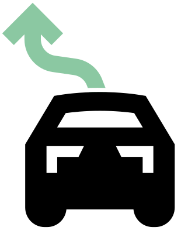
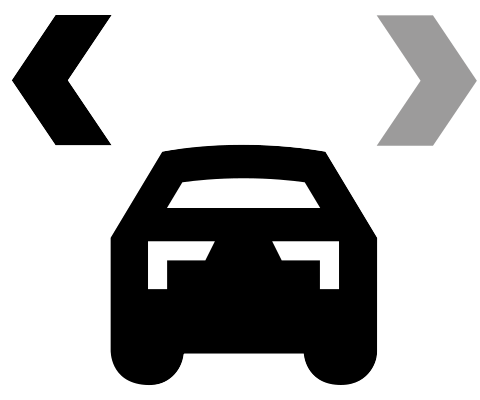
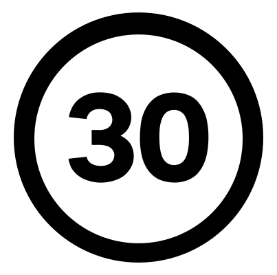

Lorsque le contact est mis, certains voyants s'allument brièvement pour vérifier le fonctionnement des systèmes du véhicule. Si les systèmes contrôlés sont en ordre, les voyants correspondants s'éteignent quelques secondes après la mise du contact.
Autres informations À propos des témoins de contrôle.
Symbole
Signification

Signale un danger seul ou conjointement avec un autre témoin » Mode de fonctionnement
Reprendre immédiatement le contrôle de la direction » Mode de fonctionnement

Ceinture de sécurité non bouclée à l’avant et à l’arrière » Mode de fonctionnement
Intervention du système de protection proactive des occupants » Mode de fonctionnement
Ne pas poursuivre la route.
La batterie de véhicule 12 volts ne se charge pas » Dépannage
Cesser de rouler ou brancher immédiatement le véhicule à une station de recharge. Le véhicule roule à une vitesse maximale de 7 km/h.
Performance insuffisante » Dépannage

Ne pas poursuivre la route.
Niveau de liquide de refroidissement trop bas » Dépannage

Ne pas poursuivre la route.
Niveau de liquide de frein trop bas » Dépannage
Ne pas poursuivre la route.
Défaut du frein de stationnement » Dépannage
Ne pas poursuivre la route.
Défaut du servofrein électromécanique » Dépannage
Ne pas poursuivre la route.
Avec
 – système de freinage et ABS défectueux » Dépannage, » Dépannage
– système de freinage et ABS défectueux » Dépannage, » Dépannage
S’allume - Frein de stationnement électronique activé » Utilisation
Chercher une autre place de stationnement moins inclinée.
Clignote – Stationnement dans des pentes trop fortement inclinées » Dépannage

Arrêter le véhicule et suivre les instructions de la Notice d’Utilisation.
Allumé - Défaut de la direction assistée » Dépannage
Ne pas poursuivre la route.
Clignote – Défaut du verrouillage de colonne de direction (système KESSY) » Dépannage

L’assistant d’urgence intervient » Mode de fonctionnement

Ne pas poursuivre la route.
Batterie haute tension – Risque d’incendie » Dépannage
Ne pas poursuivre la route.
Système électrique surchauffé » Dépannage
Ne pas poursuivre la route.
Erreur du système de propulsion électrique » À noter, » Dépannage

Appuyer sur la pédale de frein.
Avertissement en cas de risque de collision » Mode de fonctionnement, » Mode de fonctionnement

Appuyer sur la pédale de frein.
Le système ne freine pas suffisamment » Dépannage, » Mode de fonctionnement, » Mode de fonctionnement

Ouvrir immédiatement toutes les fenêtres.
Concentration en CO2 élevée » Dépannage

Faire une pause.
État critique du conducteur détecté » Mode de fonctionnement

Faire une pause.
Détecteur de fatigue » Mode de fonctionnement
Rester concentré sur la conduite du véhicule.
Alerte d’hypovigilance » Mode de fonctionnement

Signale un avertissement seul ou conjointement avec un autre témoin » Mode de fonctionnement

Indique, avec d’autres témoins, les restrictions des systèmes d’aide à la conduite. Suivre les instructions relatives aux témoins allumés des systèmes d’aide à la conduite. » Mode de fonctionnement
Il est possible de continuer à rouler, recharger la batterie haute tension dès que possible.
Batterie haute tension déchargée » Dépannage
Il est possible de continuer à rouler, recharger la batterie haute tension dès que possible.
Faible état de charge de la batterie haute tension » Dépannage

Continuer de rouler pour réchauffer la batterie haute tension ou brancher le véhicule à une station de recharge.
Performance de conduite limitée » Dépannage

Continuer à rouler, faire appel à l’aide d’un atelier spécialisé.
Calcul de l’autonomie impossible » Dépannage

La batterie 12 V doit être rechargée, suivre les instructions de la Notice d’Utilisation.
Faible état de charge de la batterie 12 volts » Dépannage
Continuer à rouler, faire appel à l’aide d’un atelier spécialisé.
La batterie de véhicule 12 volts ne se charge pas » Dépannage
Continuer à rouler, faire appel à l’aide d’un atelier spécialisé.
Charge défectueuse de la batterie de véhicule 12 volts » Dépannage

Il est possible de poursuivre la conduite, il convient de faire l’appoint de liquide lave-glace.
Niveau du liquide lave-glace trop bas » Dépannage

Il est possible de continuer la conduite, les phares/feux et les essuie-glaces doivent être commandés manuellement. Faites appel à l’assistance d’un atelier spécialisé.
Capteur de lumière et capteur de pluie défectueux » Dépannage, » Dépannage

Si la visibilité depuis le véhicule est garantie, la poursuite du trajet est possible. Faites appel à l’assistance d’un atelier spécialisé.
Dysfonctionnement de l'essuie-glace » Dépannage

Si le défaut ne compromet pas la sécurité routière, la poursuite du trajet est possible. Faites appel à l’assistance d’un atelier spécialisé.
Ampoule LED défectueuse » Dépannage

Allumer la lumière.
Aucun éclairage n’est allumé » Mode de fonctionnement

Feu arrière de brouillard allumé » Utilisation

Il est possible de continuer à conduire avec précaution.
Augmentation de la température des freins » Dépannage
Ne pas poursuivre la route.
Conjointement avec
 – température élevée des freins » Dépannage
– température élevée des freins » Dépannage
Il est possible de poursuivre la conduite, faire appel à l’aide d’un atelier spécialisé.
Avec
 – Défaut de récupération d’énergie » Dépannage
– Défaut de récupération d’énergie » DépannageIl est possible de continuer à conduire avec précaution. Faites appel à l’assistance d’un atelier spécialisé.
Erreur du système de propulsion électrique » Dépannage

Continuer à rouler, faire appel à l’aide d’un atelier spécialisé.
Défaut du bruit de moteur électronique » Dépannage

Il est possible de continuer à conduire avec précaution. Faites appel à l’assistance d’un atelier spécialisé.
ABS défaillant » Dépannage

Continuer à rouler, faire appel à l’aide d’un atelier spécialisé.
Défaut du frein de stationnement » Dépannage
Il est possible de continuer à conduire avec précaution. Faites immédiatement appel à l'assistance d'un atelier spécialisé.
Défaut du servofrein électromécanique » Dépannage

Il est possible de continuer à conduire avec précaution. Faites appel à l’assistance d’un atelier spécialisé.
Garnitures de frein usées » Dépannage

Arrêter le véhicule, suivre les instructions de la Notice d’Utilisation.
Changement de la pression des pneus » Dépannage, » Mode de fonctionnement, » Dépannage

Arrêter le véhicule, suivre les instructions de la Notice d’Utilisation.
Allumé - Défaut de la direction assistée » Dépannage
Déverrouiller le verrouillage de colonne de direction ou faire appel à l’aide d’un atelier spécialisé.
Clignote - Verrouillage de colonne de direction non déverrouillé » Dépannage
Il est possible de continuer à conduire avec précaution. Faites appel à l’assistance d’un atelier spécialisé.
Défaut du verrouillage de colonne de direction (système KESSY) » Dépannage

Suivre les instructions de la Notice d’Utilisation.
KESSY – Aucune clé trouvée » Dépannage, » Dépannage
Suivre les instructions de la Notice d’Utilisation.
KESSY – Problème lors de la mise du contact » Dépannage

Airbag du passager avant activé » Mode de fonctionnement

Airbag du passager avant désactivé » Mode de fonctionnement

Le véhicule peut continuer à rouler, faire appel à l’aide d’un atelier spécialisé dans les plus brefs délais.
S’allume conjointement avec
 – Commande à clé défectueuse pour la désactivation de l’airbag » Dépannage
– Commande à clé défectueuse pour la désactivation de l’airbag » DépannageLe véhicule peut continuer à rouler, faire appel à l’aide d’un atelier spécialisé.
Défaut du système d’airbag » Dépannage
Continuer à rouler, faire appel à l’aide d’un atelier spécialisé.
Défaut du système de protection proactive des occupants » Dépannage
S’allume pendant 4 s, puis clignote – Airbag ou rétracteur de ceinture coupé avec l’appareil de diagnostic » Utilisation

Ne pas continuer à rouler, suivre les instructions de la Notice d’Utilisation.
Mauvais ajustement de la sangle de la ceinture de sécurité du conducteur » Mode de fonctionnement

L’ESC Sport est activé » Vue d’ensemble, » Réglages, » Réglages

Le trajet peut être poursuivi dès que cela est possible, suivre les instructions de la Notice d’Utilisation.
Allumé – ESC ou ASR défectueux » Dépannage
Clignote – ESC ou l’ASR intervient » Vue d’ensemble, » Vue d’ensemble

Front Assist désactivé » Réglages

Le trajet peut être poursuivi dès que cela est possible, suivre les instructions de la Notice d’Utilisation.
Front Assist non disponible » Dépannage

Le trajet peut être poursuivi dès que cela est possible, suivre les instructions de la Notice d’Utilisation.
ACC pas disponible » Dépannage

Le trajet peut être poursuivi dès que cela est possible, suivre les instructions de la Notice d’Utilisation.
Assistant de changement de voie défectueux » Dépannage

Le trajet peut être poursuivi dès que cela est possible, suivre les instructions de la Notice d’Utilisation.
Assistant de stationnement perturbé » Dépannage

Le trajet peut être poursuivi dès que cela est possible, suivre les instructions de la Notice d’Utilisation.
Avertissement de sortie perturbé » Dépannage

Le trajet peut être poursuivi dès que cela est possible, suivre les instructions de la Notice d’Utilisation.
Défaut de l’assistant pour les situations d’urgence » Dépannage

Le trajet peut être poursuivi dès que cela est possible, suivre les instructions de la Notice d’Utilisation.
Assistant de détection de fatigue en panne » Dépannage

Le trajet peut être poursuivi dès que cela est possible, suivre les instructions de la Notice d’Utilisation.
Défaut ou indisponibilité de la caméra de rétroviseur » Dépannage, » Dépannage

Le trajet peut être poursuivi dès que cela est possible, suivre les instructions de la Notice d’Utilisation.
Avertissement de vigilence perturbé » Dépannage

Le trajet peut être poursuivi dès que cela est possible, suivre les instructions de la Notice d’Utilisation.
Défauts du Park Pilot » Dépannage

Le trajet peut être poursuivi dès que cela est possible, suivre les instructions de la Notice d’Utilisation.
Défauts du Travel Assist » Dépannage
Lane Assist intervient » Mode de fonctionnement

Le trajet peut être poursuivi dès que cela est possible, suivre les instructions de la Notice d’Utilisation. Indisponibilité du système Lane Assist
Indisponibilité de Lane Assist » Dépannage

Le trajet peut être poursuivi dès que cela est possible, suivre les instructions de la Notice d’Utilisation.
Détection de signalisation routière perturbée » Dépannage

Ouvrir toutes les fenêtres. Continuer à rouler, faire appel à l’aide d’un atelier spécialisé.
Augmentation de la concentration en CO2. » Dépannage

Continuer à rouler, faire appel à l’aide d’un atelier spécialisé.
Défaut du capteur de CO2 mesurant la concentration » Dépannage

Erreur dans le système d’appel d’urgence » Mode de fonctionnement

Clignote - Clignotant à gauche » Utilisation
Ne pas continuer à rouler, contrôler les clignotants.
Clignote plus vite – clignotant gauche en panne » Dépannage

Clignote - Clignotant à droite » Utilisation
Ne pas continuer à rouler, contrôler les clignotants.
Clignote plus vite – clignotant droit en panne » Dépannage

Ne pas continuer à rouler, contrôler les clignotants de la remorque.
Clignotant remorque en panne » Dépannage

S’allume - la fonction Auto Hold bloque le véhicule » Mode de fonctionnement
Clignote –Arrêt dans des pentes trop fortement inclinées
Chercher une autre place de stationnement moins inclinée. » Dépannage

La batterie haute tension est en cours de recharge » Utilisation, » Utilisation

Lane Assist est activé et prêt à intervenir » Mode de fonctionnement

L’ACC régule la vitesse du véhicule » Mode de fonctionnement

L’ACC règle la vitesse du véhicule en fonction de la vitesse autorisée » Mode de fonctionnement

L’ACC règle la vitesse du véhicule à l’approche d’un rond-point » Mode de fonctionnement

L’ACC règle la vitesse du véhicule à l’approche d’un carrefour » Mode de fonctionnement

L’ACC règle la vitesse du véhicule à l’approche d’un virage à gauche » Mode de fonctionnement

L’ACC règle la vitesse du véhicule à l’approche d’un virage à droite » Mode de fonctionnement

L’ACC règle la vitesse du véhicule à l’approche d’une sortie à gauche » Mode de fonctionnement

L’ACC règle la vitesse du véhicule à l’approche d’une sortie à droite » Mode de fonctionnement

L’ACC règle la vitesse du véhicule en fonction de la fin de la limitation de vitesse » Mode de fonctionnement

L’ACC règle la vitesse du véhicule à l’approche d’une priorité à droite » Mode de fonctionnement

L’ACC règle la vitesse du véhicule à l’approche d’un feu » Mode de fonctionnement

Allumé - le limiteur de vitesse régule la vitesse du véhicule » Mode de fonctionnement

Eco Assist régule » Mode de fonctionnement

L’Travel Assist est activé » Mode de fonctionnement

Travel Assist est activé - le maintien de voie automatique est activé » Mode de fonctionnement

Travel Assist est activé - le régulateur de vitesse est activé » Mode de fonctionnement

Travel Assist est activé, un changement de voie assisté a lieu » Mode de fonctionnement
Température extérieure basse » Vue d’ensemble
Feux de route ou avertisseur optique allumé(s) » Utilisation

Régulation des feux de route Light Assist activée – les feux de route sont allumés » Utilisation
Assistant de projecteurs activé – les feux de route sont allumés » Utilisation

Lane Assist est activé, mais pas prêt à intervenir » Mode de fonctionnement

Boîte automatique déverrouillée » Modes

Reprendre le contrôle de la direction » Mode de fonctionnement

Régulation des feux de route Light Assist activé » Utilisation
Assistant de projecteurs activé » Utilisation

Le trajet peut être poursuivi dès que cela est possible, suivre les instructions de la Notice d’Utilisation.
Défaut du limiteur de vitesse » Dépannage

Allumé - limiteur de vitesse activé » Mode de fonctionnement

L’ACC est activé » Mode de fonctionnement

Travel Assist est activé, un changement de voie assisté n’est pas possible » Mode de fonctionnement

Travel Assist est activé, un changement de voie assisté est possible » Mode de fonctionnement

Lane Assist est désactivé » Mode de fonctionnement

Front Assist est démarré » Restriction
La distance est inférieure à la distance de sécurité » Mode de fonctionnement

Véhicule précédent » Mode de fonctionnement

Approche d’une limitation de vitesse » Mode de fonctionnement
Approche d’un rond-point » Mode de fonctionnement

Approche d’une intersection » Mode de fonctionnement
Approche d’un virage à gauche » Mode de fonctionnement

Il est recommandé de lever le pied de l’accélérateur » Mode de fonctionnement

Approche d’un virage à droite » Mode de fonctionnement

Approche d’une sortie à droite » Mode de fonctionnement

Faire une pause.
Détecteur de fatigue » Mode de fonctionnement

Rester concentré sur la conduite du véhicule.
Alerte d’hypovigilance » Mode de fonctionnement

Mode de conduite Normal » Vue d’ensemble

Mode de conduite Eco » Vue d’ensemble
Mode de conduite Individuel » Vue d’ensemble
Mode de conduite Sport » Vue d’ensemble

Documents cartographiques non disponibles pour la détection de signalisation routière » Mode de fonctionnement

Paramètre d'avertissement incorrect pour la détection de signalisation routière » Mode de fonctionnement

Éclairage tous temps allumé » Utilisation

L’appareil externe branché prélève du courant de la batterie haute tension » Utilisation
Suivre les instructions de la Notice d’Utilisation.
Recharge d’urgence » Dépannage